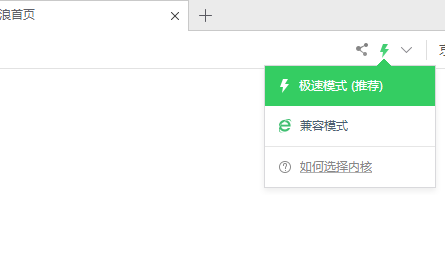

对不起，您的电脑显卡不支持WebGl，请更换电脑进行浏览
您的操作系统版本过低，为了便于您的浏览，推荐您使用360浏览器或升级您的操作系统
您当前的浏览器无法浏览，如果您正在使用360浏览器，请在地址栏右侧按下图所示切换极速模式

如果您正在使用IE浏览器，您可以前往微软帮助下载安装最新版的IE11浏览器，或者您也可以安装谷歌浏览器或者火狐浏览器
如果您使用非360浏览器，您可以前往当前浏览器官网更新至最新版本或直接下载安装谷歌浏览器或者火狐浏览器